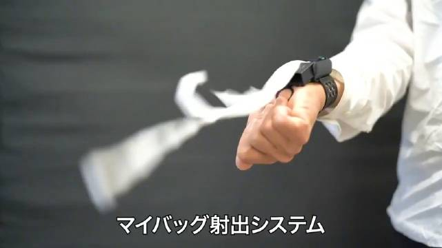

明俊看到#姣姣#刷手机，学习不专心这些现象都会怒不可遏，只有姣姣呼呼大睡时，比如周末一口气睡到下午两点才起，他从来不会说什么。往往是我要去叫醒闺女时，觉得她睡多了，她爹还会说让她睡呗。大概因为明俊自己睡眠一向不好，他把睡眠看得很重要，也羡慕睡得好睡得香的人。
跟#姣姣#和明俊说出去快走时，电梯里捡到个骑自行车的三岁男童，口齿不清，问不出住哪里，带到楼下后，男童狂奔，我拎着他的自行车在后面追，还好没一会儿就遇到了男童家人，貌似小区已找了好几圈，那个看起来七八岁的大概是哥哥，哭得不能自己。兄弟情深还蛮感人的。我讲这事有些无所谓的态度，说在这个小区不可能丢娃的。姣姣问为什么，我说安全感高，连货架上自取的快递，这几个月都没丢过。另外，谁要捡娃养呢？麻烦死了。要是捡个猫，兴许还能带回家。
#一个人的企业# 聊睡眠话题，有人推荐产品，从产品名到对方解释的原理，我脑子里一直想冲出口的话是：智商税，智商税，智商税。驳斥她的文章我能写上三千字，胶原蛋白，肽，红枣，酵母，酸碱平衡这些名词，市场上装神弄鬼的太多，我找资料就能让对方看看，什么叫知识，什么叫专业，什么叫科学。忍了好半天才没把驳斥的话说出来。我以前特讨厌这种自己没脑子还想忽悠我的商家。通常都会让对方难受下。现在有些改变。大家都要做生意，各自赚各自能赚的钱吧。话不投机，就别说话了呗。
看来都有自己最看重的标准哈。//@浅浅爱Charity:我也睡眠不好，所以我也不会认为别人睡懒觉有啥不好，还有点羡慕。@Ada李力:明俊看到#姣姣#刷手机，学习不专心这些现象都会怒不可遏，只有姣姣呼呼大睡时，比如周末一口气睡到下午两点才起，他从来不会说什么。往往是我要去叫醒闺女时，觉得她睡多了，她爹还会说让她睡呗。大概因为明俊自己睡眠一向不好，他把睡眠看得很重要，也羡慕睡得好睡得香的人。
是的，比如孔子会骂睡懒觉的学生朽木不可雕，孔子大概是早起星人。//@凝碧的波痕:还有一种，自己也睡懒觉，所以会理解睡懒觉的人，比如我爸也理解我。只可惜有了娃我就再没有懒觉睡了。@Ada李力:明俊看到#姣姣#刷手机，学习不专心这些现象都会怒不可遏，只有姣姣呼呼大睡时，比如周末一口气睡到下午两点才起，他从来不会说什么。往往是我要去叫醒闺女时，觉得她睡多了，她爹还会说让她睡呗。大概因为明俊自己睡眠一向不好，他把睡眠看得很重要，也羡慕睡得好睡得香的人。
回复@争当上进好青年:目标不一样啊，专家教授对真伪非常在意，认为存在对错与真理。而商人目标是赚到钱，不会为对错争辩。//@争当上进好青年:回复@Ada李力:ada姐你觉得商人和专家教授最大的差别是啥@Ada李力:#一个人的企业# 聊睡眠话题，有人推荐产品，从产品名到对方解释的原理，我脑子里一直想冲出口的话是：智商税，智商税，智商税。驳斥她的文章我能写上三千字，胶原蛋白，肽，红枣，酵母，酸碱平衡这些名词，市场上装神弄鬼的太多，我找资料就能让对方看看，什么叫知识，什么叫专业，什么叫科学。忍了好半天才没把驳斥的话说出来。我以前特讨厌这种自己没脑子还想忽悠我的商家。通常都会让对方难受下。现在有些改变。大家都要做生意，各自赚各自能赚的钱吧。话不投机，就别说话了呗。
#不明所以#记得日本有沙雕设计评选大赛，这个是参赛作品吗？手腕上带一个这么丑，每天使用频率最高一次，并且用完一次就得补充的小盒子，这是得多想不开。@36氪:日本从7月起开始对购物袋收费了，沙雕网友为了不忘记随身携带塑料袋，发明了这个“塑料袋发射器”。在有需要时，只要翻转手腕，就可以像蜘蛛侠一样发射一个塑料袋出来，瞬间成为全店最靓的仔但是...如果忘记带这个发射器呢？（YouTube精选）YouTube精选的微博视频  88万次播放 00:55